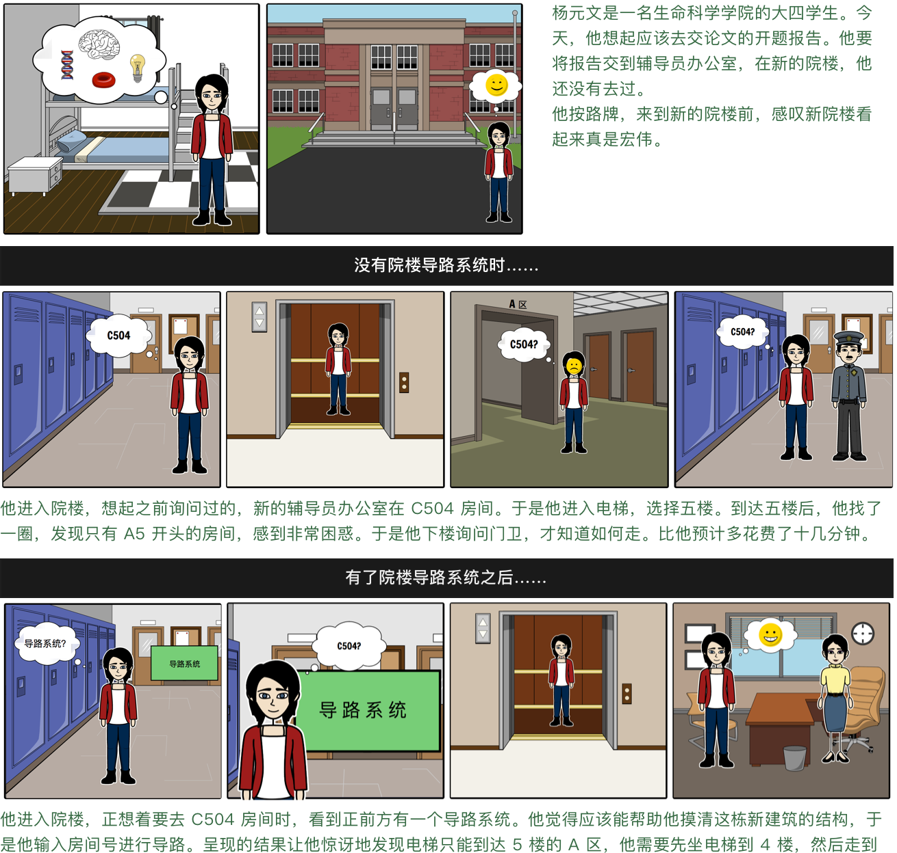
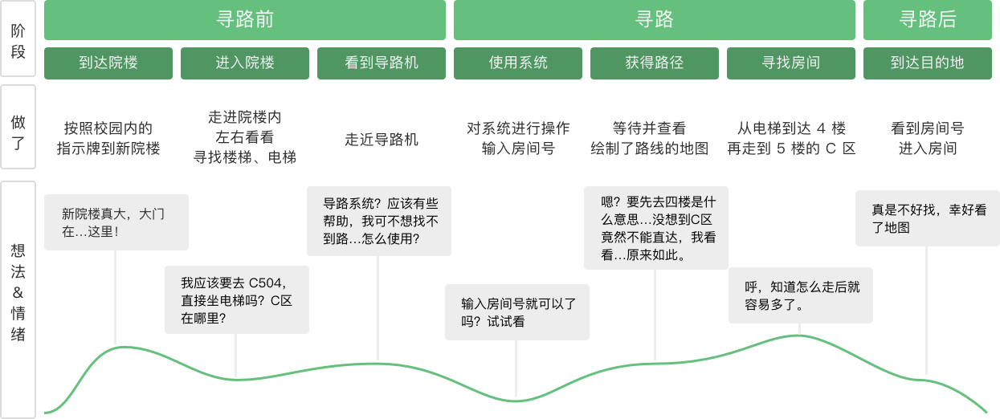
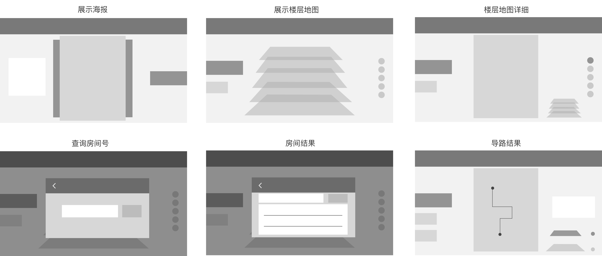
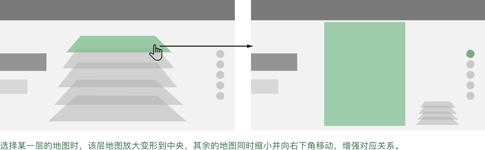

需求分析 & 交互设计 & 视觉设计 & 前端代码
用户访谈 & 人物角色 & 情景剧本 & 用户旅程
这是一款为不熟悉院楼的人快速寻找房间设计的导路系统。 新设计的院楼楼层结构复杂，会出现无法直达的情况（要去五楼的部分区域，需要坐电梯到四楼，然后通过不同的楼梯达到相应的五楼区域），而且分了若干区域，区域之间的划分不明确，所以对于不熟悉院楼的师生、外来人员，需要一个在大厅的系统可以指路。在系统空闲时，展示学院近期的讲座海报。
通过与需求方和确定需求，与用户进行沟通之后，我们发现，通过呈现出用户在没有导路系统的情况下寻找房间的行为，能够更好地展示用户遇到的难题和困惑，增加了开发人员的同理心。 再呈现有了院楼导路系统后，用户的行为是如何发生了改变，该系统如何帮助用户解决问题。
通过故事板，我们更加了解用户的行为习惯。但是，绘制用户旅程图更能让我们体会到在与系统接触、使用过程中，用户在想法、情绪上的变化。
用户旅程地图能帮助我们体会到用户在一般情景之下，使用系统之前、使用系统时、使用系统后想法与情绪上的变化，了解用户在不同阶段关心的事物。
在交互设计阶段，我们既要从对用户的研究中发现并解决痛点，同时也要满足客户方（即学院项目负责人）的需求，即展示学院讲座海报。同时，我们得知导路系统将会在一体机上展示，摆放在学院入口处，这也要求我们考虑用户和一体机之间交互的舒适度。
综合考虑上述三个因素，我们强调了导路入口的触发，将海报展示设置为默认页，并且将主要操作集中在适当高度与范围内。
动态的触发按钮，引导用户进行操作。按照《微交互( Microinteractions )》一书中提到的触发器原则
Make the trigger something the target users will recognize as a trigger in context.
在首屏展示海报的前提下，将地图导路功能的入口触发器做了以下两层强调：
地图部分，分为不同楼层的展示与导路结果的展示。在楼层展示部分，使用地图堆叠的效果，加强与物理世界的映射。当点击楼层地图时，使用动态效果缩小其他楼层地图，加强楼层之间的映射关系。
在导路结果部分，只显示需要走动的楼层，并提供楼层缩略图和路径提示，在复杂路径的情况下减轻用户的思考负担。在这里，有两个限制：院方提供的原始地图与导路系统的放置位置。
在导路系统中，最重要的就是让用户快速到达目标房间。与手机导航不同，导路系统的一体机处于固定的位置，这就意味着需要明确系统放置位置与用户朝向，让用户能够将系统内的指路结果与自身所处的物理世界快速对应。
因为是为院楼开发的产品，所以从开发到上线还需要学院的确认。其中有两个问题是在前期的需求确认与用户研究中没有发现的。